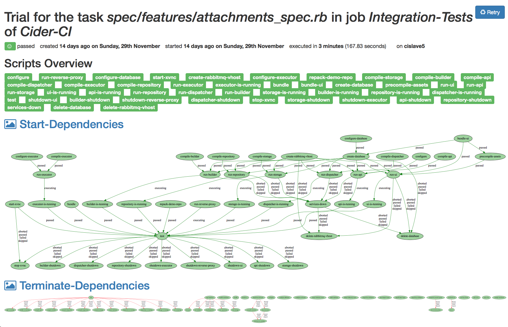

Cider-CI
Multi-service integration tests
Traditional CI:
Continous builds
- single shell script
- hooks around that script ("before", "after", …)
Problems
- hard to make faster/parallelize
- hard to set up manage complex setups
Cider-CI approach
- complex, but explicit configuration
- very little assumptions about your workflow
- pro: hackability
- con: simples cases are relatively verbose
Cider-CI overview
- Project has 1 (git) Repo
- Repo contains configuration for 1+ Jobs
- each Job runs 1+ Tasks in parallel
- each Task runs 1+ (shell) Scripts in order
- Jobs can be triggered from branches and depend on each other
- Tasks can be re-tried
- Scripts can depend on each other
Details, quick walkthrough
(Excerpt from much longer Talk about Cider-CI)
What is it good at?
- fast: run lots of tasks in parallel & retry them
- declarative dependencies for tasks
- instead of, or like very flexible "hooks"
- continous delivery: trigger and run different kinds of jobs
- instead of
make test && make build && …
- Job "Test", triggers Job "Release", triggers "Deploy", …
- Job: "Good To Merge"
- depends on "Lint", "Unit Test", "Feature Tests"
What does it not do?
- Access management
- always trusts the repository, control (push) access there
- Secrets management
- set up your own infrastructure and/or excutors
- but: executors can be told to only accept code from "blessed" repos
Complex example (CI-ception)
Cider-CI tests itself
API
REST-ful API to implement any workflow you want
- "nightly" builds and deploys
- integrate with external services
Try it out
Try Cider-CI, open source, installs with two commands:
Run either a single instance for your organization or one per project.
(Re-) use your existing infrastructure or run on-demand on AWS.
Or come talk to me on Day 2 and 3.
See the wiki, but most likely I will be at the freifunk assembly.
THX!